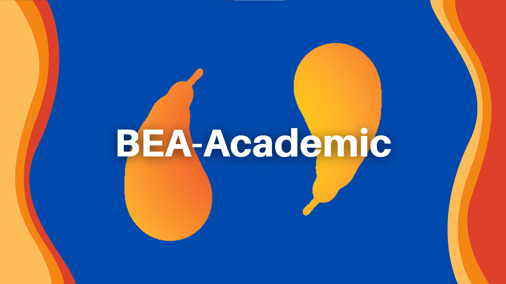

¿Que es BEA-Ademic?
Es una plataforma web que permite la búsqueda más accesible a la información académica.
Incluyendo información de webs contrastadas, estudios, libros, enciclopedias, periódicos y
revistas especializadas, de sitios confiables. Para que estudiantes puedan realizar sus trabajos
e investigaciones con la seguridad de que la información que consultaron es veraz y confiable

Estudiantes:
Camacho Carbajal Bruno Daniel
Sanchez Montoya Carlos
Escuela:
Tecnologico Nacional de México Instituto Tecnológico de Toluca
©BEA-Academic
2022
Derechos reservados